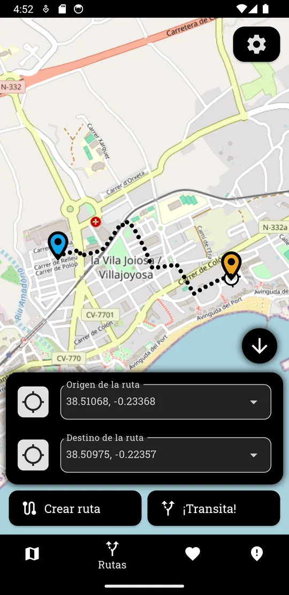
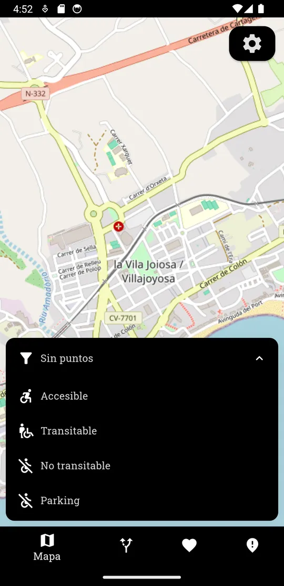
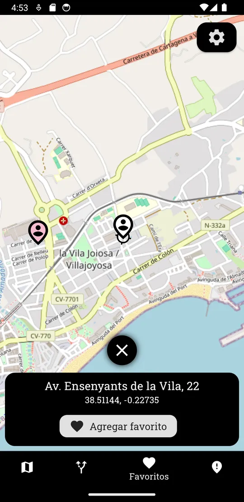
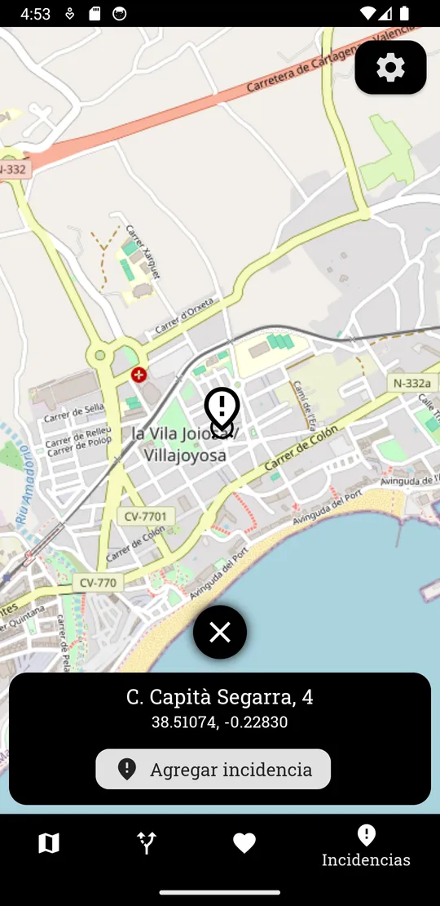
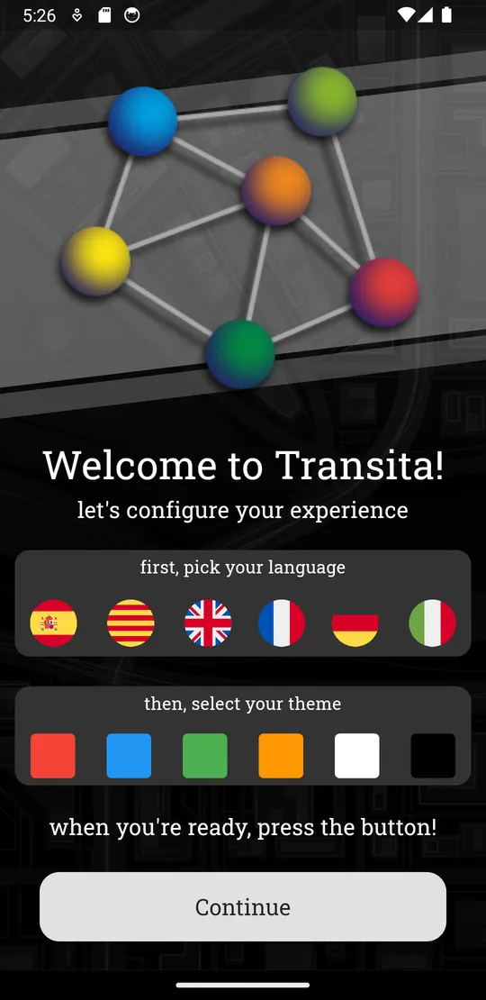
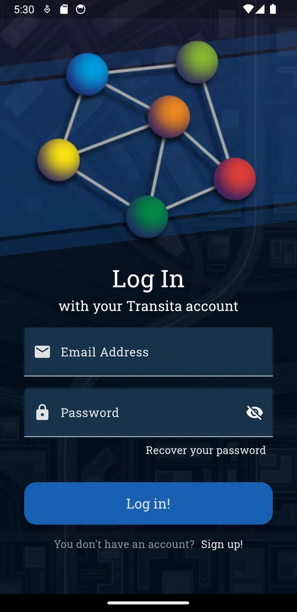
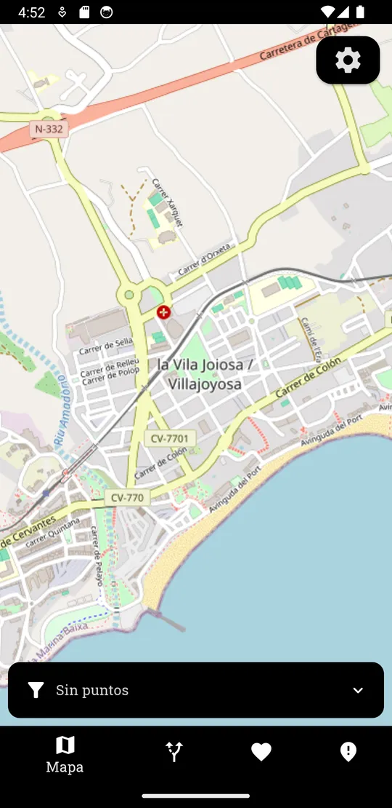
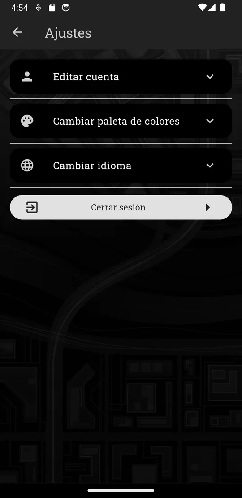

Accesible
Punto adaptado. Puedes contar con él en tu recorrido.
mobilitat accessible · App Android
Transita dibuja sobre el mapa de tu ciudad el recorrido más accesible entre dos puntos, te muestra qué calles se pueden transitar y deja que la gente avise de los obstáculos que encuentra.
38.51068, -0.23368 38.50975, -0.22357 la Vila Joiosa

Funciones
La barra inferior de Transita reúne el mapa, las rutas, tus lugares guardados y las incidencias. Pruébala aquí mismo.

Explora calles, plazas y la línea de costa con un mapa que se mueve con el dedo. El filtro inferior decide qué puntos ves encima.
Indica un origen y un destino y Transita traza el camino más accesible, punto por punto, directamente sobre el mapa.

Toca cualquier punto del mapa para ver su dirección y coordenadas, y guárdalo como favorito. Casa, el centro de salud o la parada de siempre quedan marcados con un pin rosa.

Una obra, un bordillo sin rebajar o una acera bloqueada. Marca el sitio en el mapa y pulsa Agregar incidencia para que el resto de personas lo tenga en cuenta.
Leyenda del mapa
El filtro del mapa clasifica los puntos de la ciudad en cuatro tipos. Cada uno lleva su propio icono, así no dependes solo del color para distinguirlos.
Punto adaptado. Puedes contar con él en tu recorrido.
Se puede pasar, aunque conviene ir con algo de atención.
Hay una barrera. La ruta lo esquiva por otro camino.
Plazas de aparcamiento cerca de tu origen o destino.
Cómo funciona
Escribe una dirección o toca el botón de ubicación para salir desde donde estás.
Busca un lugar, un punto de interés o uno de tus favoritos.
El recorrido accesible aparece punteado sobre el mapa, listo para seguirlo.
Hazla tuya
Al abrir Transita por primera vez eliges idioma y tema. Puedes cambiarlos cuando quieras desde Ajustes.
esEspañolcaCatalà / ValenciàenEnglishfrFrançaisdeDeutschitItalianoTema seleccionado: Azul

Capturas



Código abierto
Transita es una app Android escrita en Flutter y Dart, con una interfaz basada en Material Design. El código se publica con licencia MIT.
Desarrollada por tres personas con un objetivo: que moverse por la ciudad sea posible para todo el mundo.
Consulta el código, abre una incidencia o propón mejoras en el repositorio.